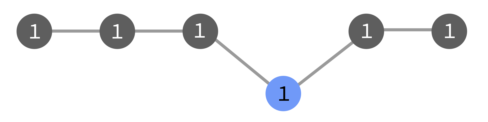

Concurrent Flows
In Cylc, a flow is a self-propagating run through the workflow graph
from some initial task(s).
At start-up the scheduler automatically launches a flow from the start
of the graph. But you can use cylc trigger --flow=new ID to start additional
flows anywhere in the graph, while the original (and any other) flow still
runs. New flows continue on from triggered tasks as dictated by the graph.
When a flow advances to a new task in the graph, the task will only run
if it did not already run in the same flow.
See below for suggested use cases, and an
example, of this capability.
Note
Flows merge where (and if) tasks collide in the n=0
active window. Downstream of a merge, tasks are considered to belong
to all constituent flows.
Flow Numbers
Flows are identified by numbers passed down from parent task to child task in
the graph.
Flow number 1 is triggered automatically by cylc play at scheduler
start-up. The next flow started by manual triggering
gets the number 2, then 3, and so on.
Tasks can carry multiple flow numbers as a result of flow
merging.
Note
Flow numbers are not yet exposed in the UI, but they are logged with task
events in the scheduler log.
Triggering & Flows
By default, manual triggering (with cylc trigger or the UI) starts a new
front of activity in current flows.
But it can also start new flows and trigger flow-independent single tasks.
In the diagrams below, the grey tasks run in the original flow (1), and the
blue ones run as a result of a manual triggering event. They may be triggered
as part of flow 1, or as a new flow 2, or with no flow number.
- Triggering in Current Flows
cylc trigger [--wait] ID
This is the default action. The triggered task gets all current active flow
numbers. Subsequently, each of those flows will consider the task to have
run already.
Ahead of active flows this starts a new front of activity for the
existing flows, which by default can continue on without waiting for them to
catch up:

With --wait, action downstream of the triggered task is delayed until
the first flow catches up:

Behind active flows the triggered task will run, but nothing more will
happen if any of the original flows already passed by there:

- Triggering in Specific Flows
cylc trigger --flow=1,2 ID
This triggers the task with flow numbers 1 and 2.
The result is like the default above, except that tasks in the new front
belong only to the specified flow(s), regardless of which flows are
active at triggering time.
- Triggering a New Flow
cylc trigger --flow=new ID
This triggers the task with a new, incremented flow number.
The new flow will re-run tasks that already ran in previous flows:

- Triggering a Flow-Independent Single Task
cylc trigger --flow=none ID
This triggers a task with no flow numbers.
It will not spawn children, and other flows that come by will re-run it.

- Special Case: Triggering
n=0 Tasks Tasks in the n=0 window are active, active-waiting, or
incomplete. Their flow membership is already determined - that of
the parent tasks that spawned them.
Flow Merging in n=0
If a task spawning into the n=0 window finds another instance
of itself already there (i.e., same name and cycle point, different flow
number) a single instance will carry both (sets of) flow numbers forward from
that point. Downstream tasks belong to both flows.
Flow merging in n=0 means flows are not completely independent. One flow
might not be able to entirely overtake another because one or more of its tasks
might merge in n=0. Merging is necessary while task IDs - and associated
log directory paths etc. - do not incorporate flow numbers, because task IDs
must be unique in the active task pool.
Merging with Incomplete tasks
Incomplete tasks are retained in the active window in
expectation of retriggering to complete required outputs and continue their flow.
If another flow encounters an incomplete task (i.e. if another instance of the
same task collides with it in the n=0 active window) the task will
run again and carry both flow numbers forward if it successfully completes its
required outputs.
Stopping Flows
By default, cylc stop halts the workflow and shuts the scheduler down.
It can also stop specific flows: cylc stop --flow=N removes the flow number
N from tasks in the active task pool. Tasks that have no flow
numbers left as a result do not spawn children at all. If there are no active
flows left, the scheduler shuts down.
Some Use Cases
- Running Tasks Ahead of Time
- To run a task within the existing flow(s) even though its prerequisites are
not yet satisfied, just trigger it. Use
--wait if you don’t want the new
flow front to continue immediately. Triggered task(s) will not re-run when
the main front catches up.
- Regenerating Outputs Behind a Flow
To re-run a sub-graph (e.g. because the original run was affected by a
corrupt file), just trigger the task(s) at the top of the sub-graph with
--flow=new.
You may need to manually stop the new flow if it leads into the main trunk
of the graph, and you do not want it to carry on indefinitely.
- Rewinding a Workflow
- To rewind the workflow to an earlier point, perhaps to regenerate data and/or
allow the workflow to evolve a new path into the future, trigger a new
flow at the right place and then stop the original flow.
- Test-running Tasks in a Live Workflow
- You can trigger individual tasks as many times as you like with
--flow=none, without affecting the workflow. The task submit
number will increment each time.
- Processing Flow-Specific Data?
- Flow numbers are passed to job environments, so it is
possible for tasks to process flow-specific data. Every task would have to
be capable of processing multiple datasets at once, however, in case of
flow merging. Generally, you should use cycling
for this kind of use case.
Example: Rerun a Sub-Graph
The following cycling workflow runs a task called model in
every cycle, followed by a postprocessing task, two product-generating tasks,
and finally a task that publishes results for the cycle point:
[scheduling]
cycling mode = integer
initial cycle point = 1
[[graph]]
P1 = model[-P1] => model => post => prod1 & prod2 => publish
Let’s say the workflow has run to cycle 8, but we have just noticed that
a corrupted ancillary file resulted in bad products at cycle 5.
To rectify this we could fix the corrupted file and trigger a new flow at
5/post:
cylc trigger --flow=new <workflow_id>//5/post
The new flow will regenerate and republish cycle 5 products before naturally
coming to a halt, because the triggered tasks do not feed into the next cycle.
Meanwhile, the original flow will carry on unaffected, from cycle point 8.